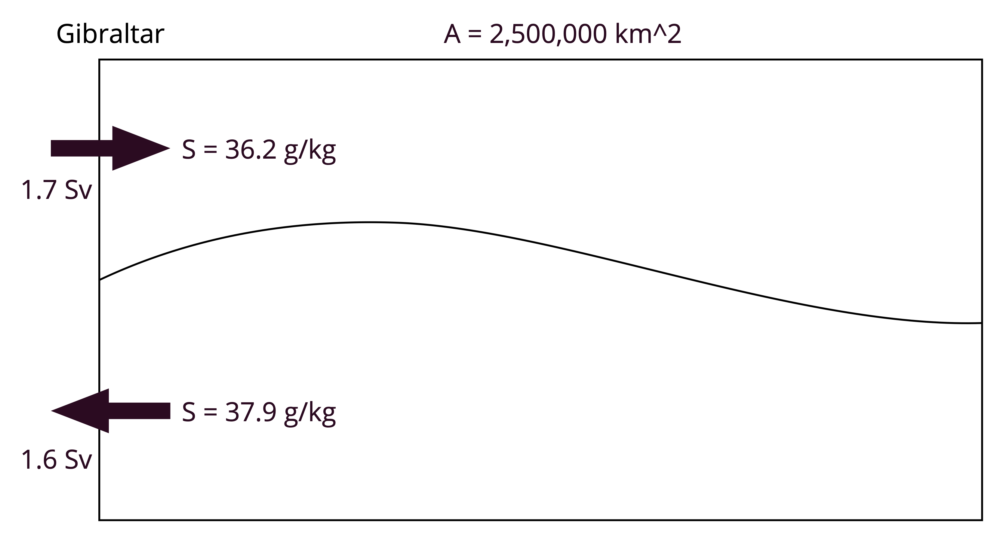
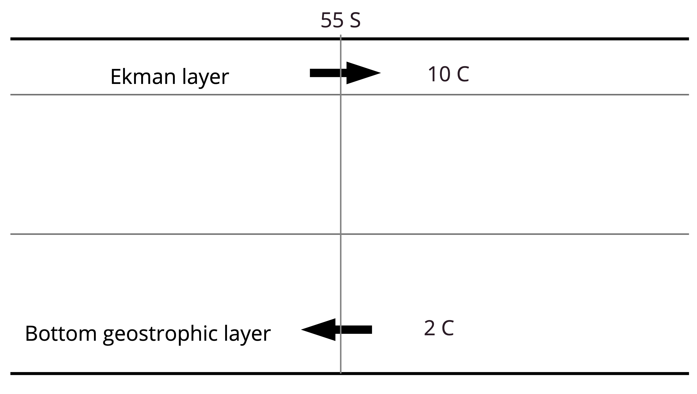

Assignment: Heat and Salt Fluxes¶
Note
These problems can be done “by hand,” but you can use a computer as a calculator if you wish.
1) Sensible heat flux¶
Let’s assume that initially the ocean and atmosphere are in a balanced state, with no turbulent heat exchange and \(T = T_{10} = 20^\circ\)C. Suddenly a cold front comes through and the air temperature drops suddenly to 18\(^\circ\)C. Assume there is no ocean current and that the atmospheric winds are blowing at 10 m/s. You can also assume that \(C_H = 10^{-3}\).
Calculate the sensible heat flux immediately after this drop in air temperature.
Assume the mixed layer is 50 m deep. Calculate the instantaneous rate of mixed layer cooling immediately after the drop in air temperature. Express your answer in degrees per day.
This cooling rate cannot be maintained. As the mixed layer cools and the ocean temperature approaches the air temperature, the sensible heat flux will become weaker. Derive an equation describing the time evolution of the air-sea temperature difference \(T' = T - T_{10}\), assuming \(T_{10}\) remains fixed. (\(T'\) is positive when the water is warmer than the air.) You should find an equation of the form \( \frac{dT'}{dt} = - \lambda T' \). The constant \(\lambda\) is an inverse timescale. Express \(\lambda\) first in terms of the other parameters and then find its value. Give your answer in the units days\(^{-1}\). In your own words, what does \(\lambda\) represent? How does it depend on the mixed layer depth? The wind speed?
This equation is a simple linear, first-order ordinary differential equation. Write the solution for \(T'(t)\). How long does it take the initial air-sea difference of 2\(^\circ\)C to be reduced by half?
2) Mediterranean Sea Volume and Freshwater Flux¶
In this problem, we return to our favorite basin, the Mediterranean Sea. The flow in and out of the Mediterranean at the Strait of Gibraltar can roughly be described as a two-layer flow. The upper layer flows in with relatively low salinity, and the lower layer flows out with higher salinity.

You may use the Boussinesq approximation for all of these calculations.
Calculate the net volume flux by advection into the basin at Gibraltar.
Calculate the average evaporation minus precipitation rate necessary to maintain a steady volume budget. Give your answer in cm/year.
Calculate the net freshwater flux by advection at Gibraltar. Is it consistent with the evaporation rate?
3) Southern Ocean Heat Transport¶
A very rough model of the Southern Ocean overturning is wind-driven Ekman pumping pushing warm water out near the surface and geostrophc transport below the depth of topography provding the return flow.

~Calculate the net Ekman-driven volume transport out the Southern Ocean near 55S assuming that the zonal wind strength is 0.1 N m\(^{-2}\). Give you answer in Sv.~ The answer is 20 Sv.
Calculate the required geostrophic inflow to keep the volume budget balance, assuming no net E-P-R below 55S.
Calculate the heat transport by this flow across 55S. Give your answer in PW (10\(^{15}\) W). Explain your sign convention.
Calculate the required average air-sea heat flux into the ocean south of 55S needed to balance the heat budget. Explain your sign convention.
Compare to the observed air-sea flux from our notes. Try to estimate an “average” value of the neir air-sea flux in below 55S. Are they compatible? What terms might be missing from our heat budget?